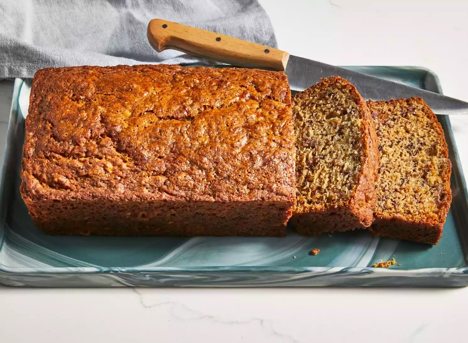

Banana bread!:

Description:
This banana bread is quick and easy to prepare, and everyone always comes back for seconds!
Ingredients:
- Bananas: Start with three ripe, mashed bananas.
- Sugar: White sugar sweetens things up.
- Egg: An egg adds moisture and helps bind the banana batter together.
- Butter: Half a stick of melted butter lends more moisture and richness.
- Flour: All-purpose flour gives the easy banana bread structure.
- Baking soda: Baking soda acts as a leavener, which means it helps the bread rise.
- Salt: A teaspoon of salt enhances the flavors of the other ingredients.
Steps:
Combine the dry ingredients in one bowl and the wet ingredients in another.
Stir the dry mixture into the wet mixture.
Pour the batter into a prepared loaf pan and bake.